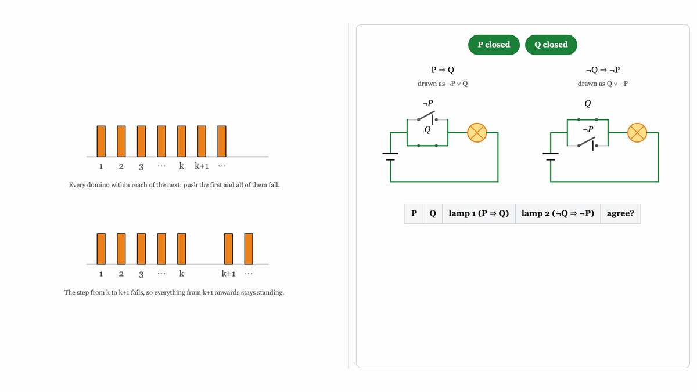
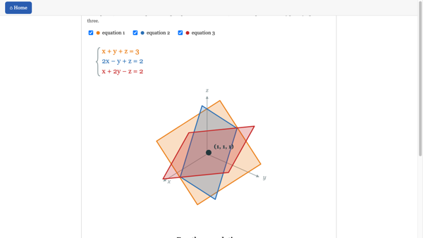
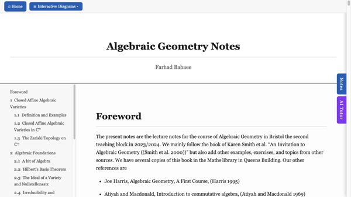

A recorded lecture on blowing up singularities. Watch on YouTube
Notes on truth tables, proof by contradiction, by contrapositive and by induction, and light switches. In two versions: a more interactive one, and a simpler one that reads well on a phone.

Interactive lecture notes with figures you can drag: vectors in Euclidean space, the dot product and the norm, complex numbers, and systems of linear equations. Open the notes

Interactive lecture notes: affine and projective varieties, the Zariski topology, the Nullstellensatz, morphisms, dimension, smoothness and toric geometry. Open the notes
